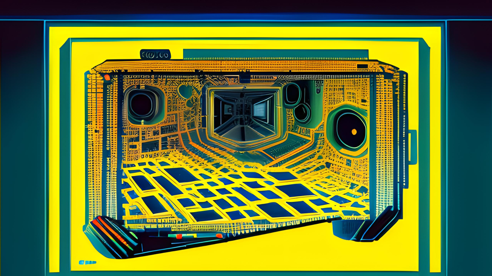
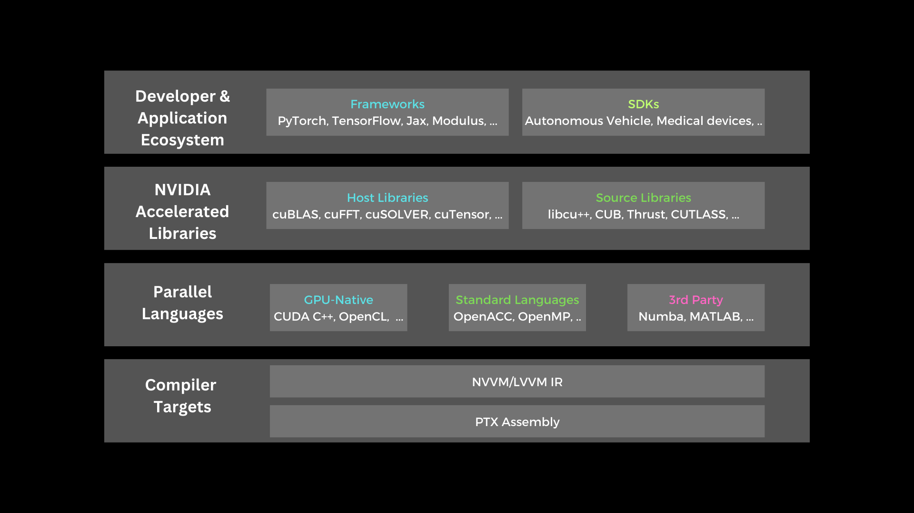
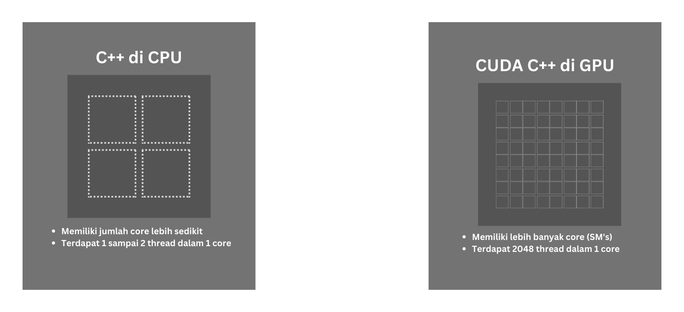
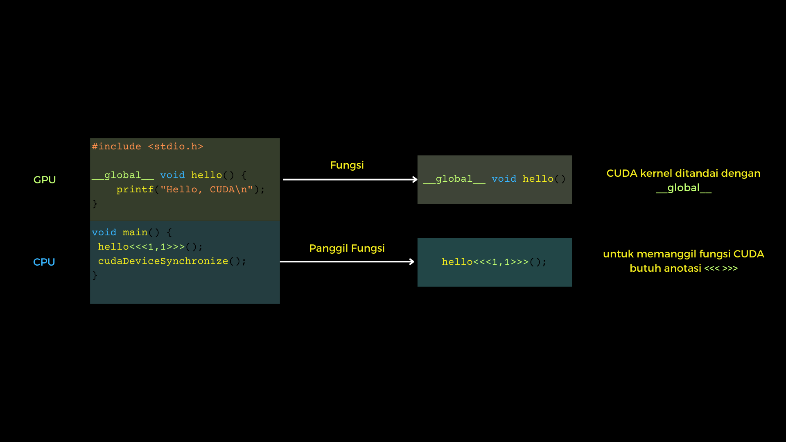
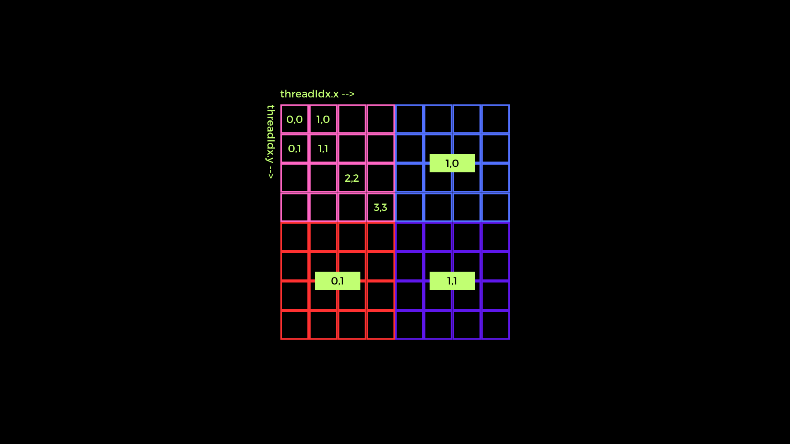

Image processing di CUDA C++ bagian 1
Ketika ingin melalukan pengolahan data atau sebuah instruksi yang harus dilakukan untuk banyak data sekaligus, normalnya kita harus melakukan perulangan untuk melaukannya. Akan tetapi, sebuah komputer yang memiliki processor dengan jumlah core yang lebih dari satu, bisa melakukan sebuah instruksi dengan beberapa data sekaligus seolah-olah bersamaan. Konsep ini kemudian dikenal dengan istilah concurrency. Seiring berjalannya waktu, perangkat keras untuk pengolahan data grafis mulai berkembang, yaitu GPU yang dikembangkan oleh NVIDIA. Dengan hadirnya GPU, komputer mampu melakukan pengolahan data grafis dengan lebih cepat dan powerful karena GPU memiliki banyak sekali streaming multiprocessor untuk melakukan pengolahan data sekaligus. Tidak seperti CPU, setiap streaming multiprocessor dari GPU memiliki ribuan thread untuk bekerja bersamaan. Dengan dasar itu kemudian NVIDIA membuat CUDA yang merupakan Parallel Computing Platform yang memungkinkan pengembanag untuk mengakses dan mengoptimalkan penggunaan dari streaming multiprocessor tersebut yang kemudian disebut CUDA core. CUDA bukan hanya sebuah bahasa pemrograman, akan tetapi lebih daripada itu.  Pada postingan ini akan dibahas CUDA dengan interface C++. Untuk sebagian yang sudah pernah menggunakan C++ di komputer desktop, mungkin sudah ada yang familiar dengan istilah concurrency, yaitu membuat instruksi untuk melakaukan beberapa task atau pekerjaan dalam waktu yang nyaris bersamaan. Di C++, kita bisa memanfaatkan jumlah thread dari CPU untuk melakukan beberaapa pekerjaan tersebut dalam waktu yang hampir bersamaan, Sedangkan pemanfaatan CUDA bisa lebih optimal jika digunakan untuk melakukan pengolahan suatu instruksi yang sama untuk banyak data sekaligus.  Dengan kemampuan tersebut, GPU sangat cocok untuk digunakan melakukan pengolahan data gambar. Pada post ini, akan berfokus pada penggunaan CUDA C++ di Ubuntu berdasarkan pengalaman dari penulis. Seperti biasa, yang pertama perlu dilakukan adalah melakukan instalasi CUDA Toolkit sesuai dengan versi GPU yang kita miliki. Untuk langkah-langkah instalasi dari CUDA Toolkit sendiri bisa ditemukan di sini Setalah menngikuti langkah-langkah di tutorial tersebut kita harus memastikan apakah CUDA Toolkit sudah benar terpasang dengan benar.
Cek apakah proses instalasi sudah berhasil atau belum
nvcc --version
Cek apakah CUDA driver sudah berhasil diisntal atau belum
nvidia-smi
Untuk yang terbiasa menggunakan C++ di Ubuntu, akan familiar untuk menggunakan GCC/G++ sebagai compiler untuk program yang dibuat. Untuk CUDA C++ sendiri, kurang lebih mirip dengan apa yang perlu dilakukan untuk C++ biasa, hanya saja untuk compiler dari CUDA C++ menggunakan NVCC sebagai compiler. Untuk format file dari CUDA C++ sendiri bisa diidentifikasi dengan format file (.cu). Untuk struktur dari program CUDA C++ bisa dilihat seperti contoh program 1 file di bawah ini (hello.cu).
#include <stdio.h>
__global__ void hello() {
printf("Hello, CUDA\n");
}
void main() {
hello<<<1,1>>>();
cudaDeviceSynchronize();
}
Klip program di atas merupakan contoh sederhana dari struktur program CUDA C++. Program di atas ketika runtime terbagi atas porsi CPU dan porsi GPU. Untuk men-compile dan menjalankan program tersebut dilakukan dengan menggunakan command line
nvcc hello.cu -o hello_cude
./hello_cuda
Pada struktur di CUDA C++, sederhananya dapat dibagi menjadi dua bagian, yaitu bagian CPU dan bagian GPU. Pada bagian GPU, adalah sebuah fungsi yang di awali dengan __global__ untuk deklarasi bahwa fungsi ini akan dieksekusi oleh CUDA atau juga biasa disebut CUDA kernel function. Sedangkan pada bagian CPU, fungsi CUDA kernel tersebut dipanggil seperti fungsi C++ biasa namun dengan anotasi khusus yaitu karakter <<<>>>. Untuk fungsi dua angka 1 di dalam karakter khusus tersebut akan lebih lanjut dibahas di bawah. Untuk lebih jelas tentang struktur program C++, bisa memperhatikan gambar di bawah ini:  Dalam sudut pandang pemrograman, bisa dibilang kalau model pemrograman CUDA ini adalah model pemrograman matriks. Hal ini mungkin didasari karena dalam pemrograman CUDA sendiri mengenal beberapa istilah untuk memodelkan alokasi memori GPU pada GPU dari NVIDIA atau dikenal dengan VRAM, yaitu Grid, Block, dan Thread. Di dalam sebuah Grid dibagi menjadi banyak Block, dan dilam Block, terdapat banyak sekali Thread. Perbedaan anatara Thread dengan Block dan Grid adalah bahwa Thread dieksekusi oleh GPU hampir parallel, akan tetapi Block dan Grid menggunakan konsep concurrency. Dari sisi jumlah, banyak thread dalam sebuah block terbatas jumlahnya, yaitu 1024. Sedangkan dalam sebuah Grid, jumlah Block bisa dibilang hampir tidak terbatas. Oleh karena itu, untuk mengoptimalkan pemrosesan data, strategi penggunaan dari ketiganya sangat penting, dengan orientasi untuk selalu memaksimalkan jumlah Thread di dalamnya. Berukut merupakan ilustrasi dari penggunaan dari thread, block, dan grid pada CUDA C++.  Pada gambar di atas, pada kotak berwarna merah muda, biru, merah, dan ungu merupakan sebuah block dalam CUDA yang kemudian dari sekumpulan block tersebut disebut grid. Untuk melihat contoh thread indexing, bisa mengacu pada kotak berwarna merah muda. Kemudian, dari ilustrasi tersebut, dapat dibuat rumusan atau pola untuk membuat indexing terhadap data yang akan diproses oleh CUDA nantinya. Di sini saya coba memberi contoh beberapa pola yang kemungkinan bisa digunakan dalam pengolahan data gambar menggunakan CUDA C++ ini.
1D Grid 1D Block
__device__ int getGlobalIdx_1D_1D() {
return blockIdx.x * blockDim.x + threadIdx.x;
}
1D Grid 2D Block
__device__ int getGlobalIdx_1D_2D() {
return blockIdx.x * blockDim.x * blockDim.y
+ threadIdx.y * blockDim.x + threadIdx.x;
}
1D Grid 3D Block
__device__ int getGlobalIdx_1D_3D() {
return blockIdx.x * blockDim.x * blockDim.y * blockDim.z
+ threadIdx.z * blockDim.y * blockDim.x
+ threadIdx.y * blockDim.x + threadIdx.x;
}
2D Grid 1D Block
__device__ int getGlobalIdx_2D_1D() {
int blockId = blockId.y * gridDim.x + blockIdx.x;
int threadId = blockId * blockDim.x + threadIdx.x;
return threadId;
}
2D Grid 2D Block
__device__ int getGlobalIdx_2D_2D() {
int blockId = blockId.x + blockIdx.y * gridDim.x;
int threadId = blockId * (blockDim.x * blockDim.y)
+ (threadIdx.y * blockDim.x) + threadIdx.x;
return threadId;
}
2D Grid 3D Block
__device__ int getGlobalIdx_2D_3D() {
int blockId = blockId.x + blockIdx.y * gridDim.x;
int threadId = blockId * (blockDim.x * blockDim.y * blockDim.z)
+ (threadIdx.z * (blockDim.x + blockDim.y));
+ (threadIdx.y * blockDim.x) + threadIdx.x;
return threadId;
}
3D Grid 1D Block
__device__ int getGlobalIdx_3D_1D() {
int blockId = blockId.x + blockIdx.y * gridDim.x
+ gridDim.x * gridDim.y * blockIdx.z;
int threadId = blockId * blockDim.x + threadIdx.x;
return threadId;
}
3D Grid 2D Block
__device__ int getGlobalIdx_3D_2D() {
int blockId = blockId.x + blockIdx.y * gridDim.x
+ gridDim.x * gridDim.y * blockIdx.z;
int threadId = blockId * (blockDim.x * blockDim.y)
+ (threadIdx.y * blockDim.x) + threadIdx.x;
return threadId;
}
3D Grid 3D Block
__device__ int getGlobalIdx_3D_3D() {
int blockId = blockId.x + blockIdx.y * gridDim.x
+ gridDim.x * gridDim.y * blockIdx.z;
int threadId = blockId * (blockDim.x * blockDim.y * blockDim.z)
+ (threadIdx.z * (blockDim.x * blockDim.y))
+ (threadIdx.y * blockDim.x) + threadIdx.x
return threadId;
}